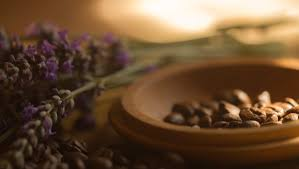

Все про кофеїн
Кофеїн — ксантиновий алкалоїд, міститься в бобах кавового дерева, у листі чаю, мате, ягодах гуарани, а також у невеликих кількостях у какао та горіхах кола; стимулятор центральної нервової системи, компонент тонізуючих напоїв та лікарських засобів для полегшення дихання. У рослинах кофеїн відіграє роль природного пестициду, який паралізує та вбиває комах-паразитів.

Кофеїн — безбарвна з гірким смаком кристалічна речовина, за структурною будовою гетероциклічний алкалоїд пуринового ряду. Вперше добутий з кавового екстракту в 1821 році.
Джерела кофеїну
Кофеїн — алкалоїд рослинного походження, міститься в деяких рослинах, найвідоміші з яких кавове дерево, чай, какао. Мате та гуарана як джерела кофеїну використовуються рідше, в основному для приготування чаю і, останнім часом, енергетичних напоїв. Альтернативні назви кофеїну — матеїн і гуаранін — походять від назв цих двох рослин відповідно.
Головні джерела кофеїну для сучасної людини — це чай, кава і шоколад. У своєму науковому дослідженні безпеки кофеїну в 2015 році Європейський орган з безпеки харчових продуктів (EFSA) виявив, що сумарна кількість кофеїну, яку вживають діти та підлітки з енергетичних напоїв, незначна. На сьогоднішній день найбільше кофеїну споживається з інших джерел: кави, чаю, шоколаду і коли. І це стосується людей будь-якого віку.
Фармакологічні властивості кофеїну
Кофеїн є стимулятором центральної нервової системи (ЦНС). Дослідження свідчать, що кофеїн підсилює процеси збудження в корі головного мозку, у відповідних дозах він підсилює позитивні умовні рефлекси і підвищує рухову активність. Стимулююча дія підвищує розумову та фізичну працездатність, зменшує втому та сонливість. Великі дози, щоправда, можуть призводити до виснаження нервових клітин. У дозуванні кофеїну треба враховувати індивідуальні особливості нервової системи. Кофеїн послаблює дію снодійних і наркотичних речовин, підвищує рефлекторну збудливість спинного мозку.
Серцева діяльність під дією кофеїну посилюється, серцеві скорочення стають більш інтенсивними та частішими. У колаптоїдних і шокових станах артеріальний тиск під дією кофеїну підвищується, однак у разі нормального артеріального тиску суттєвих змін не відбувається, оскільки водночас зі збудженням судинного центру і серця розширюються також судини скелетних м'язів та інших органів тіла (мозку, серця, нирок) (щоправда судини органів черевної порожнини звужуються).
Під дією кофеїну підсилюється секреторна діяльність шлунку.
Кава
Ка́ва — напій, що виготовляється зі смаженого насіння плодів — «бобів» кавового дерева. Кава найбільше цінується через виражену збадьорливу дію, завдяки вмісту алкалоїдів кофеїну та теоброміну. Кава культивується з давніх часів і займає важливе місце в кулінарних традиціях багатьох культур світу.
За деякими оцінками, кавовий напій є другою за об'ємами споживання речовиною на Землі після води (за іншими — другим після води є чай)
Способи приготування кави
- Кава по-східному готується в так званій джезві (турці). Часто використовуються спеції, такі, як кардамон, кориця і тому подібні.
- Кава-фільтр (американська, «Крапельниця») — більшість домашніх кавоварок працюють за «гравітаційним» принципом: гаряча вода капає на лійку з фільтром, в якій лежить мелена кава.
- Френч-прес — спеціальна колба (зазвичай скляна або металевий термос), в якій поршень з ситом відокремлює кавову гущу від напою.
- У гейзері (кава по-неаполітанськи). Гейзер складається умовно з трьох частин: в одну заливається вода, в іншу засипають мелену каву, а в третій через деякий час виявляється готовий напій.
- Копі бубук — індонезійський спосіб. Кава дуже дрібного помелу заливається у чашці окропом. Копі бубук робиться дуже міцним та дуже солодким. В такий спосіб готують, наприклад, «копі лювак».
- Еспресо — отримують за допомогою спеціальної еспресо-машини, в якій через мелену каву під тиском подається гаряча вода нагріта до температури 88-91 °C. На основі еспресо зазвичай готується:
- Кава з молоком.
- Глясе (від фр. glacé — заморожений, застиглий) — кава з морозивом.
- Капучино (італ. cappuccino) — кава з молоком і пишною піною («каптуром»).
- Лате макіато (італ. latte macchiato) — незмішане капучино, де молоко (3/4 частини), молочна піна і кава (1/4 частини) лежать шарами.
- Мока (італ. caffè mocha) — так зазвичай називають каву з додаванням шоколаду або, іноді, кава по-східному. Мокко — основний сорт кави, особливістю якого є шоколадний післясмак. В США цей вид кави зветься моккачино (Mochaccino).
- Ристрето (італ. ristretto) — найбільш концентрована, міцна та підбадьорлива кава, зварена в меншому, ніж еспресо, обсязі (7 г кави на 15-20 мл води). Всупереч поширеній думці, рістретто містить не так вже й багато кофеїну. Насправді в перші 15 секунд екстракції кави в рістретто потрапляють кавові ефірні олії, що створюють насичений смак та аромат кави, а кофеїн починає активно виділятися пізніше. Тому в порції рістретто вміст кофеїну навіть нижчий, ніж в порції еспресо.
- Фрапучино — (італ. frappuccino) — холодний кавовий напій, що продається в світовій мережі кав'ярень Starbucks. Назва «фрапучино» зроблена шляхом додавання слів «Фрапе» і «Капучино».
Чай
Чай — напій, що отримується заварюванням, варінням або настоюванням підготовленого листа чайного куща. Чаєм також називається сухе листя чайного куща, призначене для заварювання цього напою. У розширеному сенсі — будь-який листяний або трав'яний настій.
Найрозповсюдженішими та найвідомішими є чорний та зелений чаї
Види чаю
- За типом рослини:
- Китайський: китайський, дарджилінг, тайванський, в'єтнамський, індонезійський, грузинський.
- Асамський: індійський, цейлонський, кенійський, угандійський.
- Камбоджийський вважається або третім підвидом, або природним гібридом китайського та асамського. Вирощується в деяких районах Індокитаю.
- Японський вважається формою китайського підвиду, кущі якого були завезені в Японію монахами.
- За окисненням:
- Білий чай — проходить мінімальну кількість стадій обробки в процесі виробництва. Зазвичай це — в'ялення і сушка. Не зважаючи на назву, білий чай має вищу міру окиснення, ніж більшість зеленого чаю — до 12 %, тому і настій він дає темніший, всупереч поширеній помилці. Приклади: Бай Хао Інь Чжень, Бай Мудань.
- Зелений чай — на початку обробки іноді фіксується парою температури 170-180°С; окиснення продовжується не більше двох днів, після чого зазвичай припиняється нагріванням (традиційно в горщиках, як прийнято в Китаї або під парою, як прийнято в Японії), або взагалі не проводиться. В результаті чай стає окисненим на 3—12 %. Приклади: Бі Ло Чунь, Тай Пін Хоу Куй, Мао Фен, Люань Гуа Пянь.
- Жовтий чай — окиснюється на 3-12 %, майже як зелений, але перед сушкою проходить процедуру закритого «томління».
- Улун — чай, окиснений на 30-70 %. В Китаї називається «синьо-зеленим» або «блакитним». Має кілька градацій за ступенем окиснення — від найслабшого до найбільшого, який за властивостями є подібним до чорного чаю.
- Чорний чай, або за китайською термінологією, червоний або багряний — окиснюється майже повністю (на 80 %), термін окиснення — від двох тижнів до місяця, хоча існують і скорочені процеси. Приклади чорного чаю: кімун, юньнань, асам, дарджилінг, дяньхун.
- Пуер, або за китайською термінологією, чорний — ферментований чай, виготовляється із старого листя старих кущів. Після доведення до стану зеленого чаю, ферментується в точному сенсі цього слова від кількох місяців до кількох років. Пуер має два основних типи: Шу Пуер (готовий) і Шень Пуер (сирий).